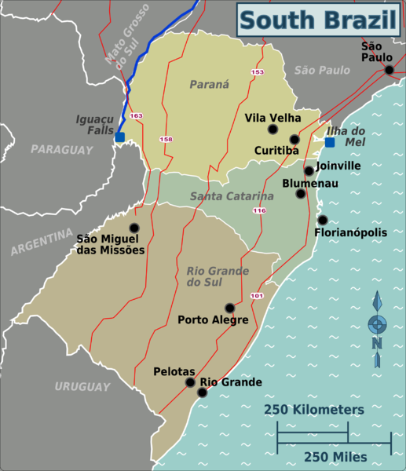

South
The South Region of Brazil is one of the five regions of Brazil. It includes the states of Paraná, Santa Catarina and Rio Grande do Sul and covers 576,409.6 square kilometres (222,553.0 sq mi), being the smallest portion of the country, occupying only about 6.76% of the territory of Brazil. Its whole area is smaller than that of the state of Minas Gerais, in Southeast Brazil, for example. It is a tourist, economic and cultural pole. It borders Uruguay, Argentina, and Paraguay, as well as the Centre-West and Southeast regions, and the Atlantic Ocean. The region is considered the safest in Brazil to visit, having a lower crime rate than other regions in the country.
- Area: 577,214 km² (6.75%);
- Population: 25,800,000 (43.46 people/km², 12.5%);
- GDP: R$503 billion / US$313,8 billion (2008; ~15%);
- Climate: Subtropical by the coast, hot to moderately hot in the summer, mild and very humid winters and temperate by the mountain range, the valleys and the plateaus in the interior, with moderate temperatures in the summer and cold in the winter, with well distributed rainfalls. Snow is relatively common, mainly in the highlands (for example in Santa Catarina state's São Joaquim);
- States: Paraná, Rio Grande do Sul, Santa Catarina;
- Largest Cities: Curitiba (1,764,540); Porto Alegre (1,413,094); Joinville (520,905); Londrina (511,278); Caxias do Sul (441,332); Florianópolis (427,298); Maringá (362,329); Pelotas (328,864); Canoas (325,188); Ponta Grossa (314,527); Blumenau (312,634); Cascavel (289,339); Foz do Iguaçu (255,900); and Santa Maria (262,368);
- Economy: Machinery and automobile industries, textiles, tourism, energy production, information technology, orange, apple, grapefruit;
- Transport: Rainforests along the coast (Mata Atlântica), subtropical semiciduous in the north and west (Araucárias) and prairie-like vegetation in the south (Pampas). Little native vegetation still remains due to deforestation;
- Vegetation: Rainforests along the coast (Mata Atlântica), subtropical semiciduous in the north and west (Araucárias) and prairie-like vegetation in the south (Pampas). Little native vegetation still remains due to deforestation;
- Notable characteristics: The South Region of Brazil is historically characterized by its high standard of living, with considerably better social indicators, which include some of the cities with the highest HDI levels in the country, including their capitals. Cities also feature an advanced level of urbanism in comparison with other parts of Brazil. The region is almost the newest in terms of urbanization, it was recently populated by European immigrants (almost 19th century immigration and refugees of World War I and World War IIs). They have added to the local culture, especially in architecture, cuisine and forms of agriculture. Southern region, however, is not immune from poverty, violence and other social issues, especially in the larger cities, even though in a lower level than poorer areas in the country. The state of Santa Catarina is proportionally the Whitest state in Brazil with over 87% of its population being European. The other Southern states also have the highest percentage rates of European population.